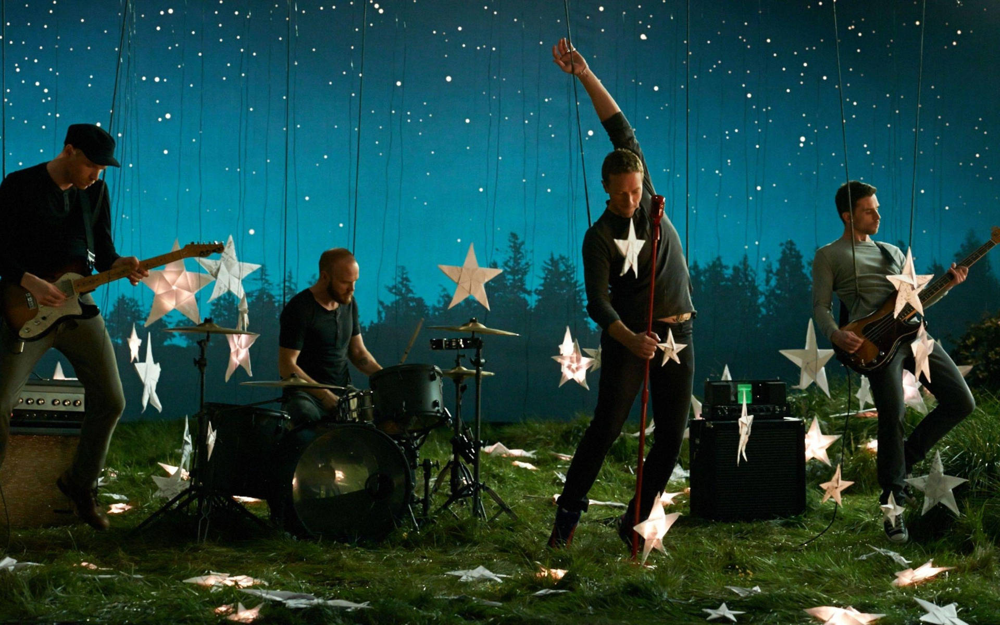
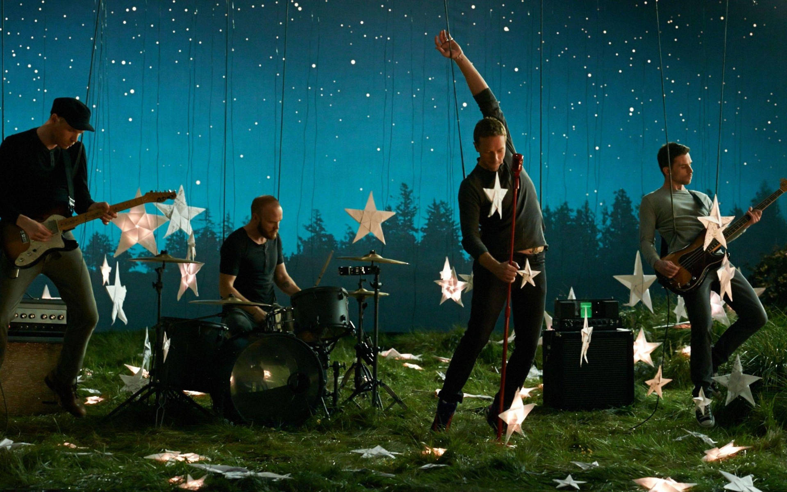
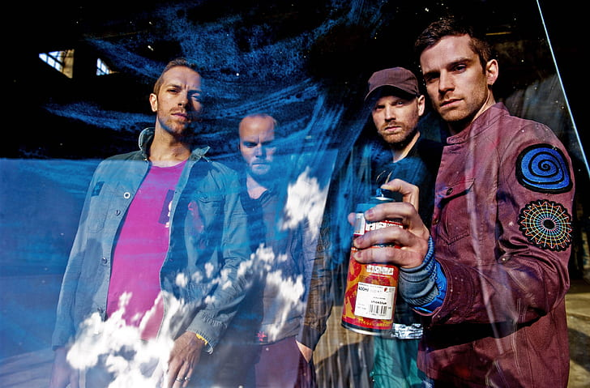
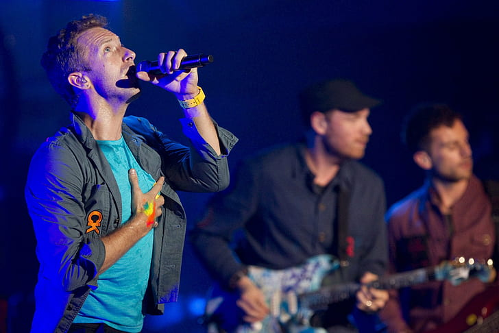
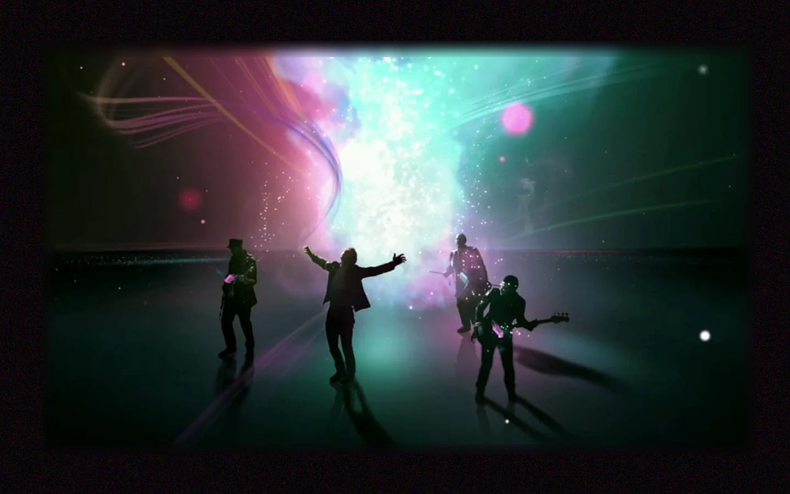
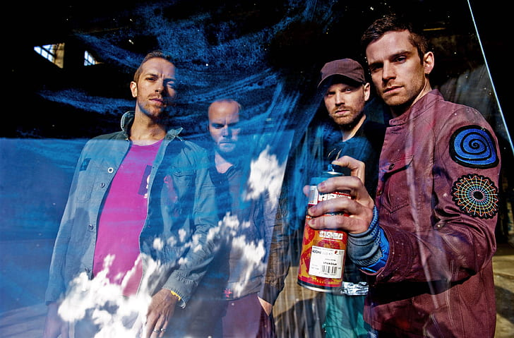
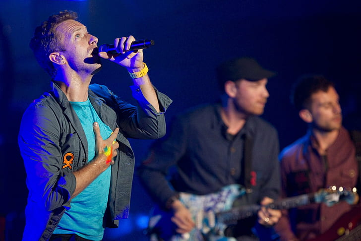
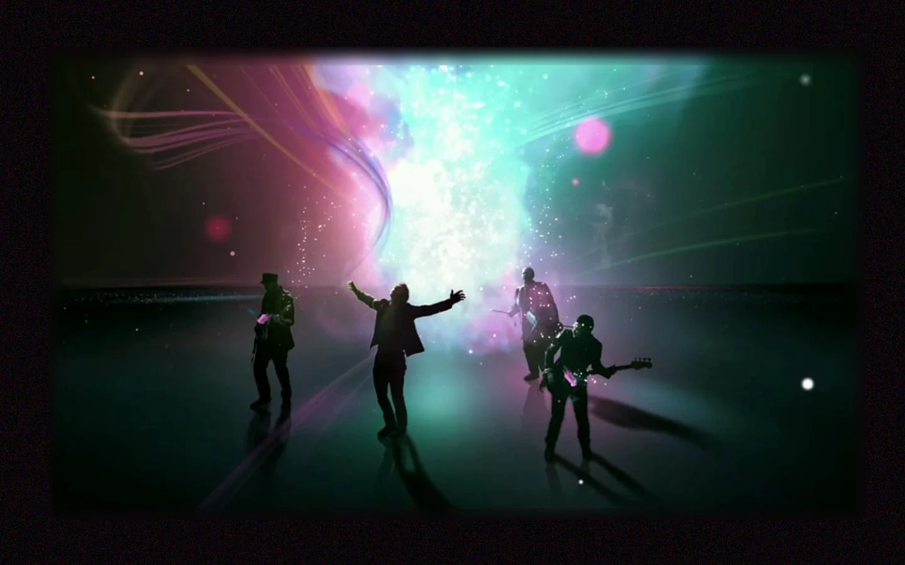

Bibliografia
Coldplay es una banda británica de rock alternativo formada en Londres en 1996. Fundada por el vocalista y pianista Chris Martin, el guitarrista Jonny Buckland, el bajista Guy Berryman y el baterista Will Champion mientras estudiaban en la Universidad University College London (UCL). Desde sus primeros días, Coldplay mostró una combinación única de melodías pegajosas, letras emotivas y un sonido distintivo que les valió un rápido reconocimiento en la escena musical británica.
El álbum debut de la banda, "Parachutes" (2000), catapultó a Coldplay a la fama internacional con éxitos como "Yellow" y "Trouble". Su segundo álbum, "A Rush of Blood to the Head" (2002), consolidó su estatus como una de las bandas más importantes del mundo, ganando múltiples premios Grammy y generando himnos como "Clocks" y "The Scientist". Con cada nuevo lanzamiento, como "X&Y" (2005) y "Viva la Vida or Death and All His Friends" (2008), Coldplay expandió su sonido, experimentando con diferentes estilos e instrumentación, mientras mantenían una base de seguidores leales.
Coldplay continuó su éxito con álbumes como "Mylo Xyloto" (2011), "Ghost Stories" (2014) y "A Head Full of Dreams" (2015), explorando temas de amor, esperanza y reconciliación a través de su música.
En la actualidad, la banda sigue siendo una fuerza dominante en la industria musical, con un impresionante catálogo de canciones y actuaciones en vivo que han cautivado a audiencias de todo el mundo.
 

 




